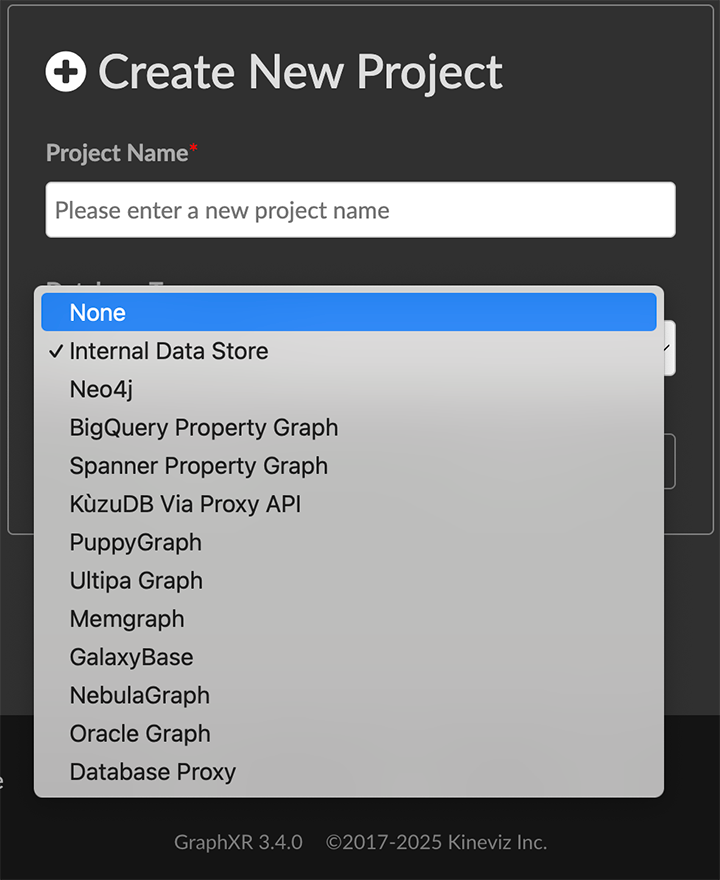
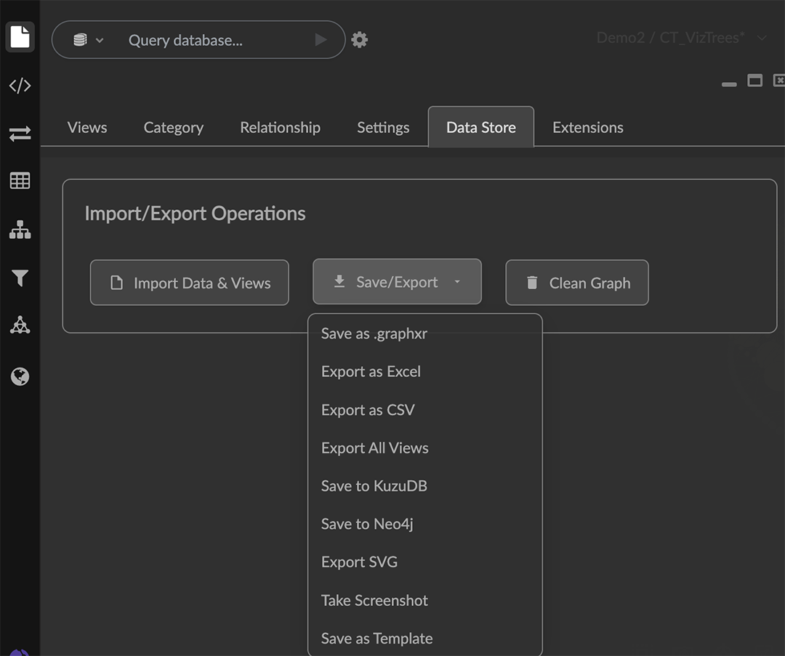
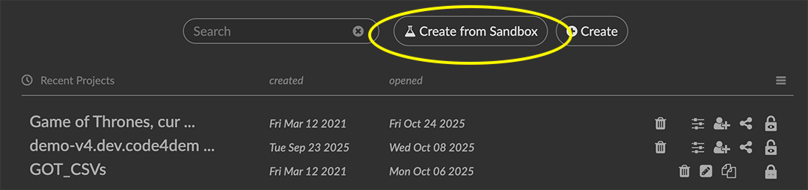
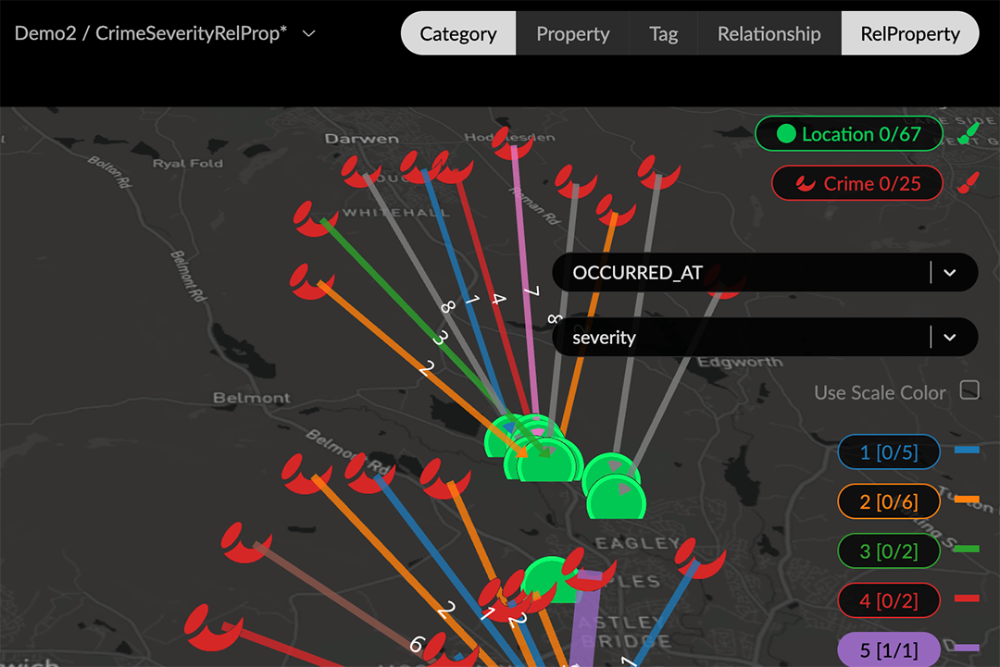
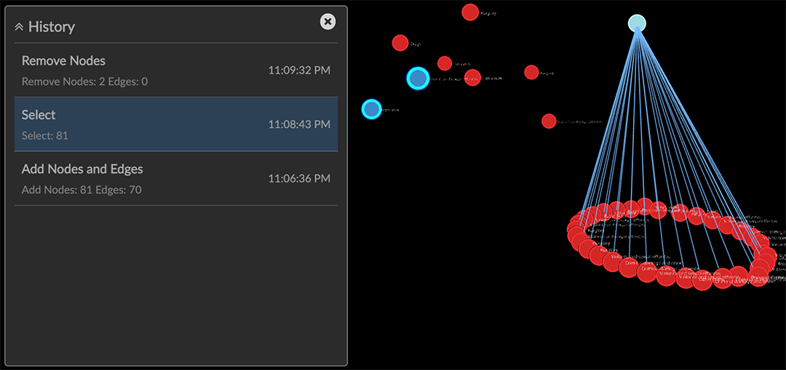
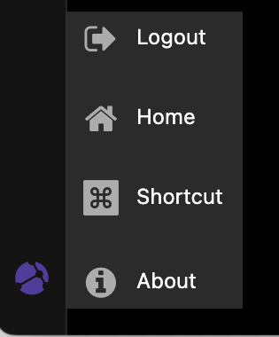

GraphXR 3.0.0 Release Notes Release Date: September 23, 2025 GraphXR 3.0.0 includes new features for connecting to graph databases, managing data operations, and creating example notebooks within a project. UI enhancements include left navbar menu re-design, Undo/Redo capability, and display of relationship properties in the legend. In a GraphXR project, click the Kineviz logo at the bottom left, choose About, then click on the current release tag for a digest of features introduced in current and past releases. New Features 3.0.0 MultiDB Access. From a list of available options, choose a graph database to be connected to a new project.  Datastore. A new tab in the Project panel to manage the project’s graph data and views: Import data stored as CSVs or graph views. Save/Export data, views, or screenshots: Export the current view locally as a CSV or Excel .zip archive Export all views saved to the project in a single .zip archive Save the current view to Neo4j, or to the embedded KuzuDB graph database. Take a .png Screenshot, or export an SVG image of the current view. Save the current project and style settings as a Template. View the current Database Configuration.  Sandbox example Grove notebooks for demonstration and learning.  Create and rename a Sandbox project based on an available example. Open and learn from the project notebook. Optionally, customize the notebook workflow and data. Admin dashboard Project Analytics page to show the number of projects and activity per user. Manage LLMs page to establish and manage connection to LLM models. Usability Enhancements The new RelProperty element in the legend lets you select relationship properties and display and style the list of property values in the same way as for category properties.  For graph models that don’t apply properties to edges you can set the project’s UI Configuration to hide RelProperty. History window to revert the graph to a previous state. History tracks addition and deletion of nodes, and layout changes. Click a list item to return to any state in the history list.  You can also Undo ctrl+Z, and Redo ctrl+Y layout, selection, and transform operations on data in the project canvas. More menu in the left menu bar to open panels or extensions when the left menu bar has more than 11 items on it. Kineviz icon menu at the bottom left to Log out, return to the Projects Home page, or display keyboard navigation Shortcuts.  Security and User Access Users are now required to change passwords as set by the admin user. Project Configuration Docker builds for separate authorization protocols, e.g. Google Cloud Platform, and others. Datasource visibility on project creation can be configured (GXR-3132). GraphXR API Additions gxr.llm() gxr.driver() Removed 3.0.0 None Extensions 3.0.0 NEW Graph Composer. Graph data modeling for relational database tables or multiple CSVs. Includes editing and organization of input tables, mapping of table elements to graph categories and properties, and definition of graph relationships. Grove Observable-based javascript notebooks For information about additional extensions, please contact Kineviz. Supported Environments 3.0.0 WINDOWS, MAC OSX, AND LINUX CLOUD, PRIVATE CLOUD, AND ON-PREMISES DATA HOSTING The GraphXR client runs best in Google Chrome; works in Safari. Compatibility with other browsers may vary. For more information, please contact Kineviz.